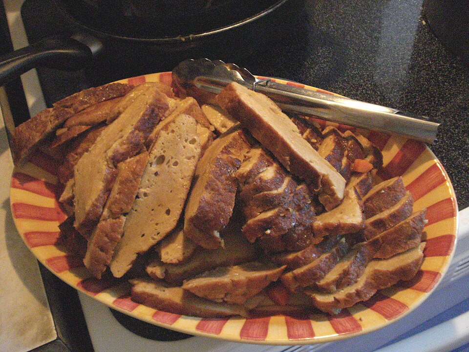

Seitan

Image: A plate of roasted seitan, sliced and ready to serve. Photo by Amy Stephenson from New York, USA - SeitanPlatter, CC BY-SA 2.0
Seitan is a healthy and tasty meat substitute. Its neutral flavor works well in a variety of dishes when paired with a sauce or glaze, and it has nearly as much protein per gram as chicken! It's the perfect dish for anyone mindful of their protein intake or while adhering to a vegetarian or vegan diet. Plus, it's cheap!
Details
Prep time: 15 minutes
Cook time: 90 minutes
Makes: 16 servings
Materials
- 2 cans chickpeas
- 3.5 cups wheat gluten
- 6 tablespoons nutritional yeast
- 1 tablespoon garlic Better Than Bouillon (chicken or beef is also tasty but not vegetarian)
- 4 tablespoons white miso paste
- 2 tablespoons onion powder
- 2 tablespoons garlic powder
- 1/2 teaspoon MSG (no, it's not bad for you)
- 4 tablespoons olive oil (vegetable oil works, too)
- 1 tablespoon apple cider vinegar
Instructions
- Using a blender, blend all the ingredients together, minus the wheat gluten.
- Add the blended ingredients into a large bowl with the wheat gluten.
- Knead the mix together gently for 3-4 minutes.
- Separate the dough into two pieces and place each half on a segment of heavy duty aluminum foil ~18" long.
- Shape each piece until it's... loaf-ish, then wrap in each side of the tinfoil.
- Bake in oven for 90 minutes @ 325°, flipping halfway through.
- You're done! Slice each loaf into whatever size you like. I like to leave one loaf wrapped, place it in a gallon freezer bag, and place it in the freezer. It will easily keep for 3-4 weeks or longer once frozen.
Also try experimenting with browning the slices in a skillet after cooking. That's also a great time to include a tasty sauce/glaze like teriyaki!
Nutritional Info (approximate)
- Per loaf (~800g): 1500 kcal, 47g fat, 105g carbs, 21g fiber, 186g protein
- Per serving (~100g): 188 kcal, 6g fat, 13g carbs, 2g fiber, 23g protein
- Per gram: 1.88 kcal, 0.058g fat, 0.13g carbs, 0.2g fiber, 0.23g protein